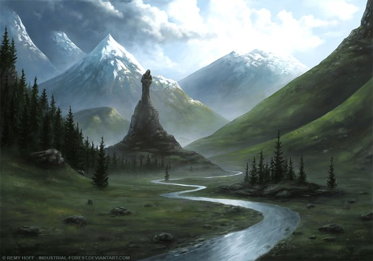
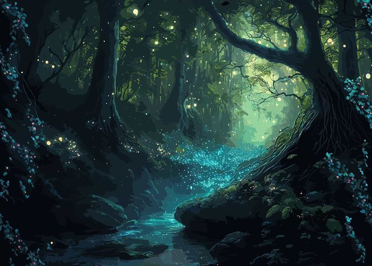
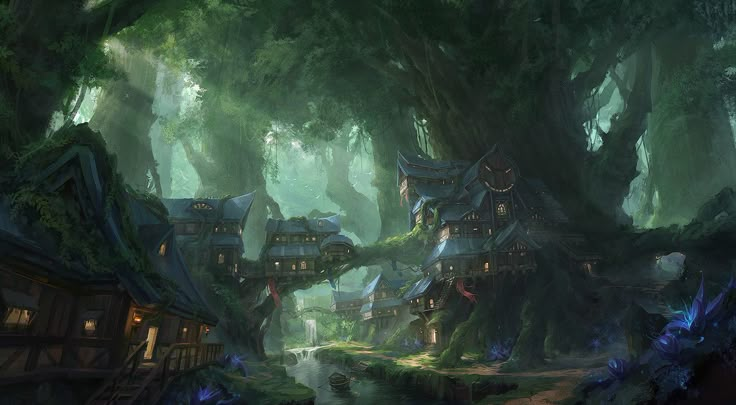

Тара — живая граница между Средиземным краем и Краем Фей, серебряная лента, неспешно текущая сквозь века и истории. Она словно разделяет два мира: один — полный человеческих забот и земных тревог, другой — пропитанный эльфийской магией и древними тайнами.

На юго-западе от её берегов лежат бесхозные нейтральные земли. Там, среди выжженной травы и расколотых камней, когда-то ревели битвы: в предгорьях Великого Титанового Хребта объединенные войска дворфов и лесных эльфов приняли бой с демонами, и река стала свидетелем тех кровавых дней. Ныне то место зовётся Великим Полем Боя, и является для Торма и Лисэма очень значимым. Это единственный случай известный истории, когда эльфы и дворфы встали плечом к плечу против общего врага. Рождается Тара высоко в горах, из-под ледяных шапок Хребта. Сначала, она всего лишь холодная, чистая горная речка, звенящая между камней и мхов, но постепенно, сбегая вниз, она набирает тепла и спокойствия. Её течение, извилистое и ленивое, ведёт её на восток, пока воды не вливаются в озеро Тихое, чьи берега хранят особое, сонное умиротворение.

В отличие от быстрой и капризной Мары или северной Центы, Тара — река тишины. Она течёт уверенно, без бурных перекатов, словно знает, что спешить ей незачем. Северный берег здесь — мягкое зелёное плоскогорье, над которым тянется Нижний Титанов Лес, а южный — более дикий, с хаотичными зарослями и каменистыми отмелями. Западные её отрезки почти ничем не отличаются от прочих рек горного края, разве что вода здесь теплее, а склоны, что подступают к воде, покрыты привычной для гор флорой — соснами, можжевельником и травами с терпким запахом. Но ближе к центру течения, там, где Тара касается эльфийских лесов, сама природа начинает меняться. Флора здесь необычна: листья сияют в лунном свете, цветы раскрываются калейдоскопом миражей, а корни некоторых растений, по слухам, улавливают шёпот воды. Сама река в этих местах будто напитана слабой целительной силой — достаточно зачерпнуть пригоршню, чтобы усталость отступила, а старые раны начали заживать. Эльфы говорят, что всё это — от древнего благословения богини Филлим, которая, согласно легенде, однажды омыла лицо в верховьях Тары, и с тех пор её воды несут частицу жизни.

Ближе к озеру Тихому берега становятся всё более волшебными. В тростниках и ивняках скрываются логова фей, у плёсов плещутся русалки, а под корягами таятся причудливые полумедузы и редкие речные полулюди. Здесь, у устья, остался старый, покосившийся мост, его опоры обросли водорослями и мхом, а по ночам на нём любят сидеть духи воды. Чуть выше, в тени огромных деревьев, стоит эльфийский форпост — стройное и лёгкое здание, охраняющее подступы к Краю Фей.
Со стороны эльфов река защищена природным куполом: с юга нависают массивные древеса с кронами, заслоняющими солнце, а с севера к воде подступают крутые нагорья. Из-за этого Тара почти всегда находится в полутени, её гладь отражает небо лишь кусками, в просветах листвы. Но ночью, когда луна высока, вода в некоторых местах начинает светиться мягким серебром. Некоторые говорят, что в её глубинах бродят стаи светящихся рыб. Их здесь, кстати, немало — от привычных горных форелей до экзотических, разноцветных, с плавниками, напоминающими крылья. Тара давно стала излюбленным местом магов: здесь тренируются природные и стихийные колдуны, ведь местная вода проводит эфир куда лучше обычной.
Эльфы чтут реку как священную, а её название в их языке означает «Слеза». Тихая, чистая и вечная.